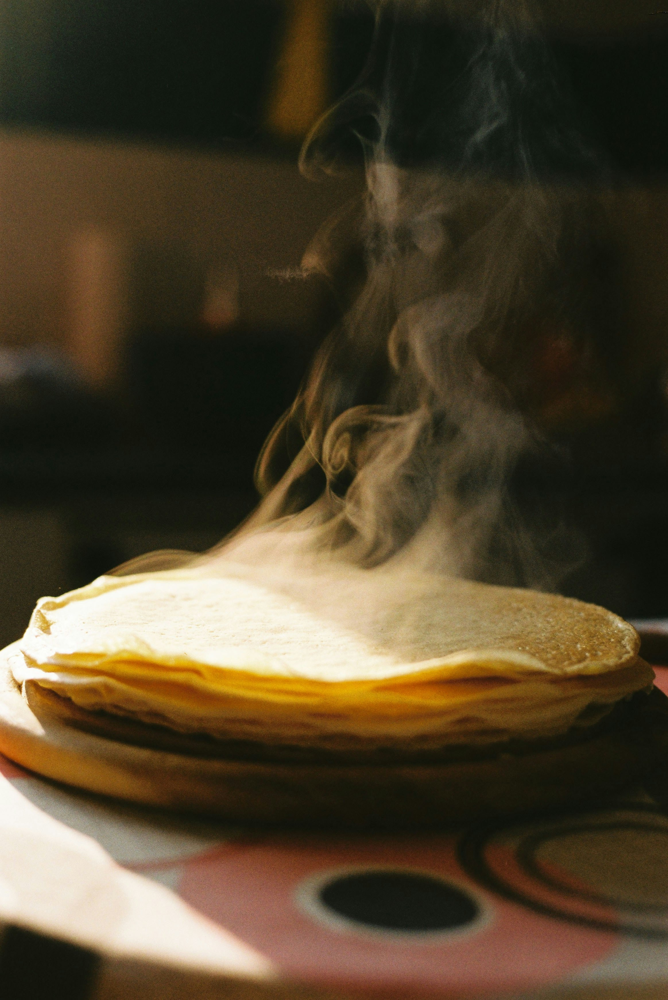

A bit of history
In France, crêpes are traditionally served on the Christian holiday La Chandeleur, on February 2. It is very easy to learn, and in France it's certainly one of the first recipe we learn to make (maybe that's false). Anyway, it exists a multiple way to make this recipe, and here I am going to share the one I used to eat as a kid.
Ingredients
Here are the main ingredients I personally use. The quantity would depends how many people there are, but I also don't use precise measure.
And that's it.
Instructions
Now we know the ingredients, let's make it real through the steps.
- Pour flour in a large bowl.
- Slowly pour the milk while whisking vigorously from the center.
- Add the eggs and continue to whisk.
- Finish with vanilla sugar (and the optional butter if desired). Then continue to pour with milk until it looks smooth.
- Finally, heat a crepes pan and grease with butter using a piece of paper towel. Pour in a ladle of dough by tilting the pan in all directions to distribute the dough well. Heat until the surface is cooked, then flip the crepes and cook the other surface for about a minute, or until the crepe becomes lightly blonde. Proceed the same with the remaining batter.
That's all, enjoy the crepes ! Use your favorite topping, like jam or a chocolate spread.
Image by Octavian Catană